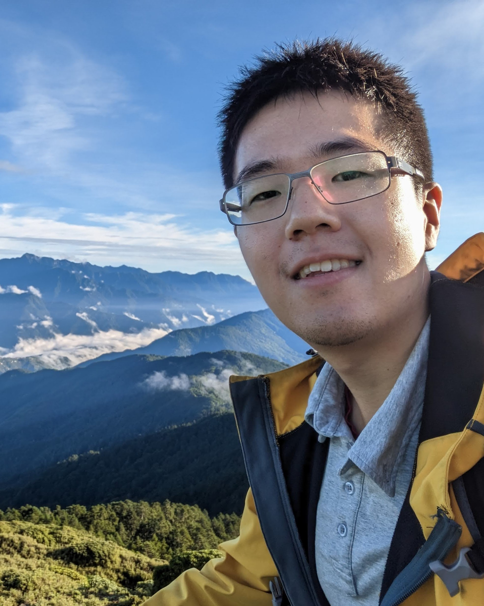

I-Chia Chang張益嘉
Ph.D. Student, Mechanical Engineering · Purdue University
I am a Ph.D. student in Mechanical Engineering at Purdue University, where I work in the TRACE Lab with Prof. Yan Gu. My research interests include humanoid robotics, hybrid dynamical systems, adaptive control, reduced-order modeling, and control methods that combine model-based and learning-based approaches.
Before Purdue, I received my B.S. in Mechanical Engineering with a minor in Physics from National Taiwan University. During my undergraduate studies, I worked on bio-inspired legged robots (RHex) and a leg-wheel transformable robot at BioRoLa under the guidance of Prof. Pei-Chun Lin. In addition to robotics research, I took thirteen courses in the Teacher Education Program at NTU and founded an educational robotics club.
News
- New preprint on adaptive disturbance rejection for humanoid walking under unknown ground motion. [arXiv]
- Co-organizing the Perception and Decision Making for Athletic Humanoid Robotics workshop at IROS 2026.
- “Evolution of Humanoid Locomotion Control” was published in Science Robotics.
- Two papers accepted to IROS 2026.
- Our survey on legged robots in non-inertial environments is on arXiv.
- Received the Best Overall Poster award at the 2026 ICON Student Research Conference.
Older news
- Presented adaptive ankle torque control for humanoid walking on moving surfaces at ACC 2025 in Denver.
- Started my Ph.D. at Purdue University as a Ross Fellow.